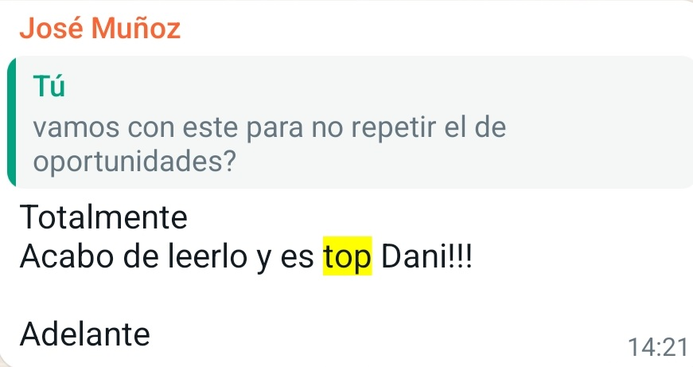
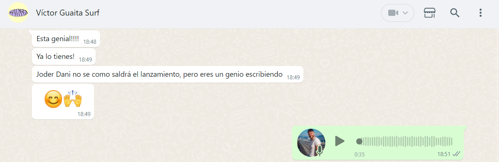
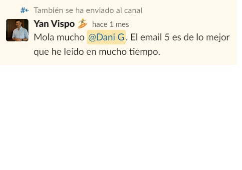
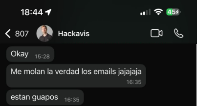

José Muñoz · Programa IN · WhatsApp
"Logré llenar las plazas de mi primer lanzamiento online en menos de un mes, con una facturación de más de 20.000€."
[[NOMBRE PENDIENTE]] · Mentes Innovadoras
Recomendación en LinkedIn

Víctor Guaita · Surf · WhatsApp
"Hicimos un match increíblemente potente para levantar un proyecto literalmente de cero y ponerlo en órbita en 2 años llegando a los +2M de facturación."
David Carbonel · Lanzamientos y funnels para infoproductores
Recomendación en LinkedIn

Yan Vispo · Proelia Digital · Slack
"Trabajar con Dani en nuestros lanzamientos ha sido un lujo. No solo escribe copy que vende, sino que entiende la estrategia detrás de cada palabra, asegurando que el embudo convierta."
Víctor Alcázar · Agencia Riders
Recomendación en LinkedIn

Jose Javier Pastor · Hackaviss · WhatsApp
"Tiene un don especial para conectar con sus clientes, hablar como si fueran ellos pero adecuando el mensaje para que funcione infinitamente mejor de cara a conseguir su objetivo."
Manuel Miñano · Proelia Digital
Recomendación en LinkedIn
"Los textos parecen que hayan sido escritos por el propio cliente, sabe detectar el tono de comunicación de cada marca y adaptarse a su estilo. Siempre manteniendo la persuasión y conversión en mente."
David Monleón · Estratega de publicidad
Recomendación en LinkedIn
[[MÁS CAPTURAS DEL MIRO · LAS ELEGIMOS JUNTOS]]
Ana Moreno · Vanessa Marrero · Tuto Marolla...